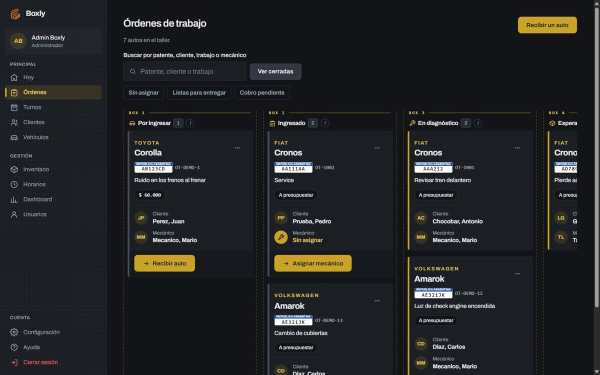

Boxly: gestión de taller mecánico
Sistema web para talleres: clientes, vehículos, órdenes de trabajo, repuestos, turnos, cobros con Mercado Pago y portal para el cliente. Proyecto grupal de 4 personas con Scrum en sprints de 2 semanas.
Mi rol: Frontend. Desarrollé los módulos de clientes, vehículos, agenda y turnos, el autocompletado por patente, las fotos e historial de las órdenes, y conecté el login y la sesión con la API.